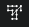
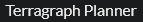
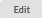

Terragraph Planner Configuration¶
Build a project with the details of all the sites before starting the Terragraph Planner.
There are two approaches available to automatically plan the network:
Distribution Network – End to End network planning with CNs. The project file must include both Network Sites and Subscriber Sites
Mesh Only Network - Cost Model – 60 GHz backhaul network planning without CNs. The project file must include Network sites and does not require subscriber sites to be created. Any subscriber sites added to the project file will not be used in the analysis.

Only Network Sites for which the Node Type is defined as POP or DN are considered for the Terragraph Planner.
To start the Terragraph Planner, select the Terragraph Planner icon  or  from the left hand Navigation Tree, which will launch the Terragraph Planner Configuration Wizard, then complete the following five configuration steps.
Step 1 Network Plan¶
Network Plan¶
Choose which type of network to plan by selecting from the following options:
Select Distribution Network when the subscriber locations are known
Select Mesh Only Network - Cost Model to only plan the mesh layer. This model uses the POP and DN locations as CN demand locations
Then click
Step 2 Inputs/Data¶
In this section choose the project area (which also checks and loads the Lidar data), see the site summary and define the LOS parameters.
Inputs/Data¶
GIS
Boundary Polygon: Click the Browse button and navigate to the required boundary polygon, which defines the area that planning will be restricted to. The file can contain only one polygon and the file should be in KML/KMZ formats only.
LiDAR data is automatically fetched for the provided boundary file (project area). LiDAR data is required to run the Terragraph Planner. If there is not a complete set of data available for the area then a warning will be shown and it will not be possible to proceed to the next steps of the configuration.
The original boundary file is not stored for security reasons but a local copy is created using a generic filename, which is available in the output file list.
Sites
This section summarizes the number of POP, DN and if required the CN sites input to the Terragraph Planner. Warnings are shown if there are any sites in the project which are outside of the boundary area and these will not be included in the Terragraph Planner analysis.
If none of the Network Sites are defined as POP sites (POP Sites = 0), set the Extra POPs field in Step 5 to greater than zero.
Line Of Sight
In this section specify the LOS related parameters.
Use Site Maximum Height?: Select this option to use the site Maximum Height provided in the Network Sites list.
Use Height Above Surface?: Select this option to use fixed height above the surface (ground height + obstruction height).
Set the heights for the POP, DN and CN (if available)
Max LOS Distance: Specify the maximum line of sight distance that should be considered between any two sites.
Min MCS of Mesh Link: Select the minimum MCS used to determine the maximum line-of-sight distance for viable backhaul links in the LOS candidate graph. Increasing the minimum MCS shortens that distance.
Min MCS of Access Link: (Distribution Network Only) Select the minimum MCS used to determine the maximum line-of-sight distance for viable access links in the LOS candidate graph. Increasing the minimum MCS shortens that distance.
After configuring the parameters in this step, click .
Step 3 Equipment Configuration¶
Equipment Configuration¶
In this section choose the 60 GHz channel, country and equipment settings.
Channel: Select the 60 GHz channel for the network plan
Country: Select the country for the project. This will automatically apply any required power limits
POP/DN: Read Only, V5000 is the only DN Equipment option. Select the minimum MCS required for the DN.
Max EIRP: The default Max EIRP for the project is calculated based on the POP/DN products and country selected. To reduce the maximum default value, enter a smaller value in this field. The Terragraph Planner analysis only considers the downlink and therefore the higher EIRP levels for some of the CNs is not used, only the EIRP for the DN radios is required.
CN: (Distribution Network Only) Select each CN product for the network. For each CN type select the minimum MCS required. To add the Radome to the V3000 High Gain tick the Radome box.
Click
When planning a Distribution Network at least one CN equipment must be selected for the study. The CN equipment selection can be more than one. Terragraph Planner chooses the lowest cost equipment for the CN location which meets the required performance setup.
Step 4 Financials¶
Financials¶
In this section, set the equipment cost for each product and the total budget for the project.
Equipment Capex: Enter the hardware cost of the POP/DN and any CN equipment selected.
Budget: Enter the maximum budget allowed for the total radio cost.
All the default values for the Equipment Capex and Budget are in US Dollars. The minimum budget required to run the Terragraph Planner is calculated based on the number of POP, DN and CN in the project and their equipment capex values. The Budget value must be greater than the calculated minimum budget for the project.
Click
Step 5 Create Network Design¶
Create Network Design¶
In this step, enter the parameters to define the network design.
Dimensioning
Default CN CIR (Gbps): Enter the minimum required committed information rate (CIR) for each CN location in Gbps.
POP Capacity (Gbps): Enter the total bandwidth per POP location in Gbps.
Where the POP is using a DN to link to the rest of the 60 GHz network the total bandwidth available to the POP will be limited by the DN capacity. To ensure that this POP Capacity is not a limiting factor it must be set to higher than the maximum DN capacity of 3.8 Gbps, but increasing this value will not prevent the network having insufficient POP Capacity.
Oversubscription: Enter the oversubscription for the network.
Link Availability (%): Enter the percentage of time in one year that each line-of-sight (LOS) link will be available.
Network Design
Use all POP Sites: Tick this box to use all the candidate POPs provided in the site input.
Extra POPs: Enter the maximum number of extra POPs that the tool should propose. This is the number of POPs in addition to the specified POPs in the site file.
Number Of Channels: Select the number of channels to use in the network design.
Maximize Minimum Guaranteed BW: Tick this box to equally distribute bandwidth across all connected clients. This ensures that all of the CNs that can be connected are connected, although sometimes at a lower bandwidth.
Maximum Number of Hops: Enter the maximum number of hops from the POP to the edge site of the network.
Redundancy Level: Select the level of redundancy required for the network.
Legacy Method maximizes redundancy within the budget constraint.
None is not redundant to any link or site.
Low is resilient to any single link failure.
Medium is resilient to any single site (POP or DN) failure.
High is resilient to a simultaneous POP and DN failure or 3 simultaneous DN failures.
The Legacy Method is both constrained by the budget and will also attempt to utilize all of the budget, which can result in more DNs being added. The other methods are driven by finding the lowest cost solution, which will result in fewer DNs added to the network, particularly for the lower redundancy levels, but this may not connect all sites.
Click on to show the summary of the Terragraph Planner project configuration.
Terragraph Planner Summary¶
The Configuration parameters entered in Steps 1 to 5 are shown in a Summary page for review before starting the Terragraph Planner process.
Summary Page¶
Select  to go back through the previous steps to update parameters and settings.
Select to start the Terragraph Planner project analysis.
Select to change all the parameters back to their default settings
The project running status can be viewed in the top right of the Terragraph Planner page.
Queuing analysis: the Terragraph Planner Project has been created and placed in a queue until a processor is available.
Preparing lidar data: the required lidar data is being processed.
Optimising network: the Terragraph Planner is running the analysis.
Small projects should complete in a few minutes, however larger projects, particularly if using multiple channels may take an hour or more to complete. Changing to another page or refreshing the browser will cause the project running status message to disappear, however it will return when it changes to a new status.
Terragraph Planner Results and Import¶
Once the Terragraph Planner project analysis completes, the results are shown in the file list.
Successful Analysis¶
Check that the number of POPs, DNs and CNs in the Results summary are close to expectations. If they are too low, select and review the input criteria, which may not have sufficient number of POPs or DNs to carry the required throughput or the MCS requirements may be too high. To import the results into the LINKPlanner project, following a successful run, click on Import Network.
Importing a Terragraph Planner analysis will result in the deletion of any existing network devices, PMP and Mesh links in the project. Click OK on the warning message to proceed. Some links may show as NLOS in LINKPlanner following the import due to the Terragraph Planner algorithm using a different LOS calculation to the main LINKPlanner code. A LOS path can usually be found with only a small (1 to 2 m) adjustment in the end closest to the obstruction.
Failed Analysis¶
If the analysis fails a message is displayed to provide guidance on what might be wrong with the configuration. Click to go back and update the settings.
Check the candidate topology file to ensure that there are enough LOS paths, particularly to give connections to the POP sites and on the mesh backhaul. If the heights are too low and too many paths are obstructed the analysis may still see this as having too little capacity available.
File List¶
The File List contains both the input and output files from the analysis process for reference.
Input Files
Config.yaml - this is the summary of the criteria used during the Terragraph Planner analysis
Output Files - all runs
generated_boundary.kml - local copy of the input boundary file
candidate_topology.kmz - contains all the paths which pass the Line of Sight analysis and can be used as candidate paths in the optimization
Output Files - successful runs only
link.csv - contains the details of the links analysed during the process, only those with a Status = Proposed are included in the final design
metrics.yaml - contains a summary of the project, including costs, site counts, equipment usage and availability metrics
reporting_topology.kml - shows the resulting network which can be viewed in Google Earth
sector.csv - contains the configuration information for each sector in the network
site.csv - contains the coordinates, altitude, device type and connections for each site location